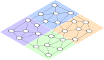
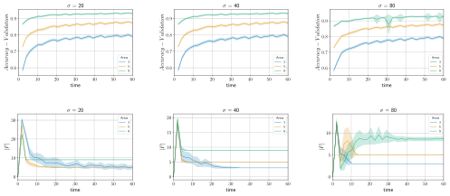
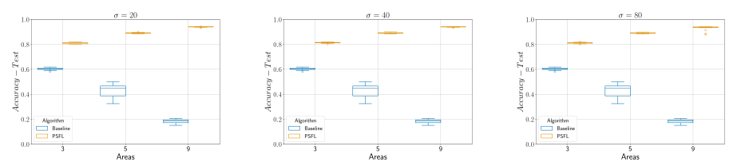

Proximity-based Self-Federated Learning
Davide Domini , Gianluca Aguzzi , Nicolas Farabegoli , Mirko Viroli , Lukas Esterle
International Conference on Autonomic Computing and Self-Organazing Systems @ ACSOS 2024

Use case
Federated Learning in a nutshell
Centralized Approach

Pros
Reduces privacy concern
Transfer less data to the server
Cons
Need for a central trusted entity
Single point of failure
Data heterogeneity
Federated Learning in a nutshell (2)
Peer-to-Peer Approach

Still some cons
Data heterogeneity
Communication overhead in the network
Clustered Federated Learning
Assumption: clients can be divided in clusters (IID data within each cluster)
Multiple models are trained to target various local distributions
Similarity measures: loss based, gradient based, weight based
BUT
Clustering is performed by a central server
Number of clusters must be defined a priori
Proximity-based Self-Federated Learning
Let’s abstract the use case
A spatial area $A = \{ a_1, ..., a_k \}$ divided into $k$ distinct continuos area
Each area $a_j$ has a unique local data distribution $\theta_j$
A set of sensor nodes $S = \{ s_1, ..., s_n\} (n > |A|)$ are deployed in $A$
Each sensor will be located in a specifica area $a_j$
Each sensor has a certain communication range $r_c$
Each sensor $s_i$ has a certain neighbourhood $N_i$
The complete local dataset $D_i$ is represented as $D_i = \{ (x_1, y_1), ..., (x_m, y_m) \}$

Algorithm overview


Loss based dissimilarity
if two clients

Space-fluid sparse choice
Experimental evaluation
Dataset: Extended MNIST - Handwritten Letters
26 classes (latin alphabet)
124800 train samples
20800 test samples
Synthetically split in {3, 5, 9} areas
Simulations realized in Alchemist¹, algorithms written in ScaFi²
Experiments available and reproducible here
Simulation
Results (1)

Results (2)
